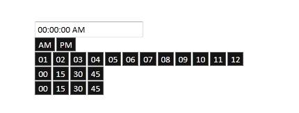

The TimePicker control allows you to set Syncfusion themes for the time picker.
Properties
|
Name |
Type |
Description |
|
AutoFormat |
Enum Skins Default: Office2007Blue |
Gets or sets AutoFormat |
You can enable this property in the following two ways:
Using Builder
The following steps guide you in configuring the time picker formats through Builder.
1. In the view, invoke the TimePicker helper with the time picker ID as the first argument and enable the AutoFormat method with the desired option as an argument.
|
[ASPX]
<%=Html.Syncfusion().TimePicker("TimePicker").Format("hh:mm:ss tt").AutoFormat(Skins.Midnight) %> |
|
[Razor]
@(Html.Syncfusion().TimePicker("TimePicker").Format("hh:mm:ss tt").AutoFormat(Skins.Midnight)) |
2. Run the application.
Using Properties Model
The following steps guide you in configuring the time picker formats through the properties model.
1. In the controller, create an instance of TimePickerModel, define the AutoFormat property, and pass the instance through view-specific data to the view as given below.
|
Controller
public ActionResult Index() { TimePickerModel myModel = new TimePickerModel(); myModel.Format= "hh:mm:ss tt"; myModel.AutoFormat= Skins.Midnight; ViewData["myTimePickerModel"] = myModel; return View(); }
|
2. In the view, invoke the TimePicker helper with the time picker ID as the first argument and the view data key as the second argument.
|
[ASPX]
<%=Html.Syncfusion().TimePicker("TimePicker","myTimePickerModel")%>
|
Note: The second argument of the above TimePicker helper should match the view data key from the controller to fetch the properties.
3. Run the application.

Figure 288: Time Picker with Midnight Skin
|
|